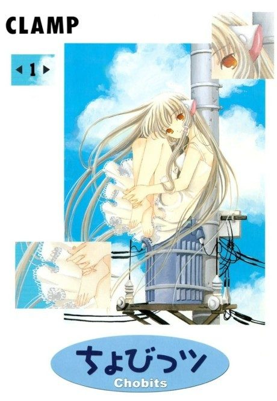

MangaDone
Anime
MangaDone
Anime
MangaChobits
ちょびっツ
AniList7.1
Animeter—
Episodes26 ep
MangaDone
Is it worth pushing through?
Built from what visitors report across all 26 episodes.
Loading reports…Checking what other people said about this one.
Sign in above with your email to add your report.